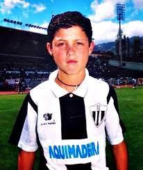
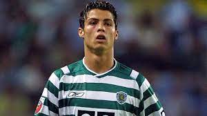
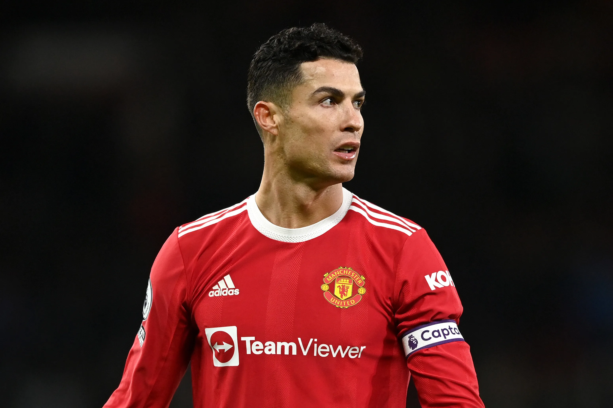
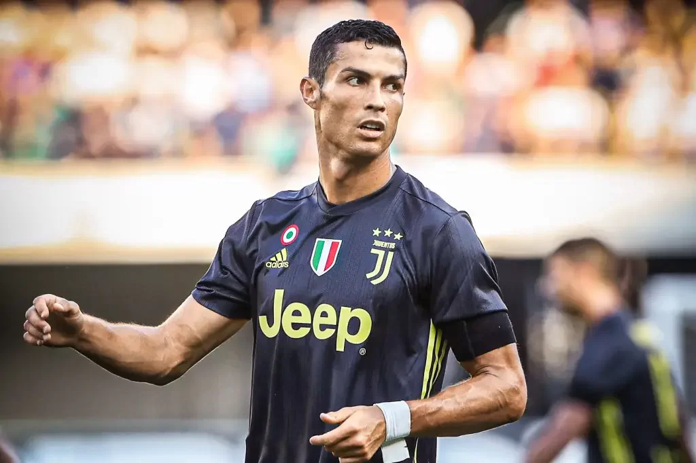
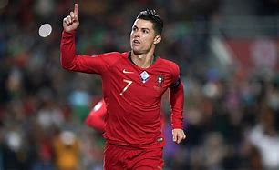
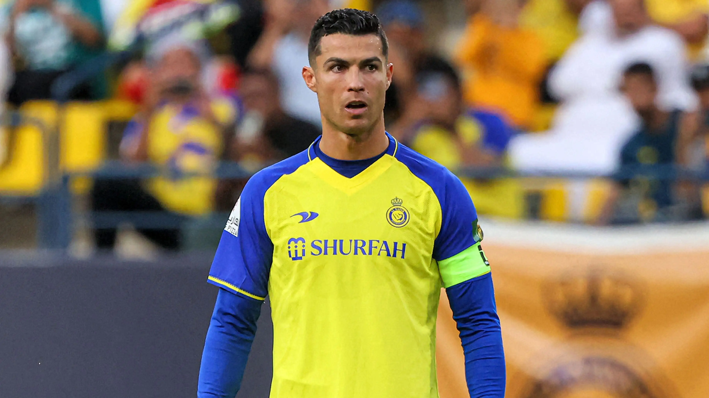

Cristiano Ronaldo Nasceu no dia 05 de Fevereiro de 1985 em Portugal na Cidade de Funchal na ilha da madeira
Cristiano Ronaldo ficou muito conhecido por ter jogado no clube Merengue Real Mardid (2009 a 2018) e na Seleção
Portuguesa onde joga até hoje.
No Real Madrid ele foi um jogador muito importante, sempre jogando em alto nível
Cristiano Ronaldo desde sua infancia jogava bola, aos 9 anos de idade quando estreou pelo Clube Andorinha, na
ilha
da madeira, despertou o interesse do maior clube da ilha (Nacional) devido as suas habilidades; que logo o
contratou
em 1995.

Sporting Lisboa
No dia 14 de abril de 1997, Cristiano Ronaldo fez o teste no Sporting Lisboa e, com apenas 11 anos entrou
para
as categorias de base do clube, onde jogou no Sub 16, Sub 17 e no Sub 18.

Manchester United
Em 2003, Cristiano Ronaldo chamou a atenção do técnico do Manchester United, da Inglaterra. Ele foi contratado
para repor a saída de David Beckham, que havia ido para o Real madrid, clube que Cristiano jogaria anos depois. No
Manchester, Ronaldo conquistou vários campeonatos e começou a mostrar seu estilo.

Real Madrid
Então Chegamos no Clube em que Cristiano Ronaldo Mais fez sucesso, conquistou muitos prémios individuais, e Jogou em alto nível
Em 2008, depois de muitas especulações, Cristiano Ronaldo foi para o Real Madrid, e participou da temporada
2009-2010. Sua contratação
foi a mais cara do clube, que tinha outros jogadores de destaque mundial como Kaká, Zidane, Ronaldo e Roberto
Carlos, que fizeram parte
da primeira fase das grandes estrelas do time espanhol, que ficaram conhecidos como os Intergalácticos.

Juventus
No dia 10 de julho de 2018, foi anunciada a transferência de Cristiano Ronaldo para a Juventus. Sua estreia foi
no dia 17 de agosto na série A do Campeonato Italiano, no jogo Juventus e Chievo.

Seleção Portuguesa
Cristiano Ronaldo foi convocado pela Seleção Portuguesa e participou da Eurocopa em 2004, onde foi vice-campeão
jogando com a Grécia. Na Copa do Mundo de 2006, ficou em 4.° lugar com a seleção de Portugal e foi considerado
um dos melhores do mundo. Em 2016, Portugal foi o Campeão Europeu.

Al Nassr
Atualmente Cristiano Ronaldo joga no clube da Arábia Saudita (Al-Nassr).Sem grandes ofertas da Europa, atacante
ex-Manchester United assina contrato com ganhos de quase 200 milhões de euros (R$ 1,09 bilhão) por ano, entre
salário e acordos de publicidade.2009-2010
Cristiano Ronaldo não vive uma boa temporada no Al-Nassr,contando mesmo até com especulações para deixar o clube
Saudita.
